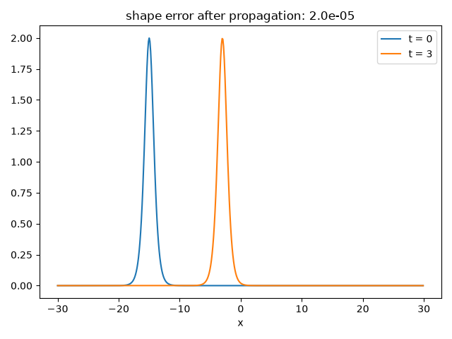

Note
Go to the end to download the full example code.
Russell’s wave of translation#
In 1834, John Scott Russell watched a solitary heap of water detach from a boat’s bow wave on the Union Canal and roll on for miles “without change of form or diminution of speed.” Sixty years later, Korteweg and de Vries explained this with the equation now bearing their names,
whose exact single-hump traveling-wave solution,
\(u(x,t) = \tfrac{c}{2}\,\mathrm{sech}^2\!\big(\tfrac{\sqrt{c}}{2}(x-x_0-ct)\big)\),
kdv_soliton() constructs directly.
This reproduces Russell’s observation itself by propagating that hump
forward on a periodic domain with kdv_evolve()
and checking it against its own exact translated copy, and animates the
whole “roll down the canal” as a frame-by-frame movie via
kdv_evolve_frames().
import matplotlib.pyplot as plt
import numpy as np
from physicskit.fields import animate_field_1d, kdv_evolve, kdv_evolve_frames, kdv_soliton, plot_field_1d
A solitary “heap of water”: a single KdV hump#
Let it “roll on for miles” down the periodic canal#
Russell’s claim holds to five decimal places: the propagated hump is
identical in shape to the exact soliton shifted by exactly c * t –
“without change of form or diminution of speed.”
predicted = kdv_soliton(x, c=c, x0=-15.0 + c * steps * dt)
shape_error = np.max(np.abs(u - predicted))
fig, ax = plot_field_1d(x, u0, label="t = 0")
plot_field_1d(x, u, ax=ax, label=f"t = {steps * dt:.0f}")
ax.set_title(f"shape error after propagation: {shape_error:.1e}")
fig.tight_layout()
print(f"shape error vs. exact translated soliton: {shape_error:.2e}")
print(f"peak amplitude: t=0 -> {u0.max():.4f}, t={steps * dt:.0f} -> {u.max():.4f} (c/2 = {c / 2:.4f})")

shape error vs. exact translated soliton: 2.02e-05
peak amplitude: t=0 -> 2.0000, t=3 -> 1.9956 (c/2 = 2.0000)
Animating the roll down the canal#
kdv_evolve_frames() records the same
propagation as a sequence of snapshots, so the “unchanged in form,
rolling on for miles” behavior can be watched directly rather than
compared only at two instants.
To save the animation to a file instead of (or in addition to) displaying it interactively, use e.g.:
anim.save("kdv_translation.gif", writer="pillow", fps=20)
Check#
The soliton translates at speed c without changing shape (amplitude c/2).
assert shape_error < 1e-4 and abs(u.max() - c / 2) < 0.01
Total running time of the script: (0 minutes 6.412 seconds)